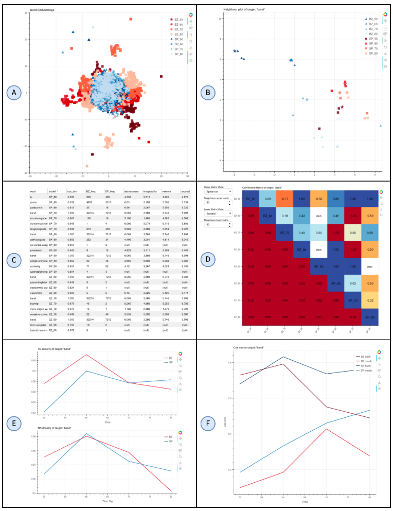

WoVis: Interactive Visualization of Word Embeddings for Semantic Change in Historical and Dialectal Language Resources

(opens in new tab)
Venue. First Workshop Dialects in NLP — A Resource Perspective (2026)
Materials.
DOI(opens in new tab)
PDF(opens in new tab)
Abstract. Computational modeling of language variation and change often relies on comparisons of word embeddings induced from existing historical and dialectal language resources. However, their use in the wider linguistics research community and in application domains such as lexicography is challenged by their limited manipulability for non-technical users, which in turn exacerbates the underuse of such resources. Aiming to foster a broader uptake of embedding-based analyses, we introduce WoVis, an interactive visualization tool designed to compare word embedding models in analyses of semantic change. Our system supports simultaneous model comparisons along two dimensions (e.g., language varieties and time periods) and provides analyses at different levels of granularity: an overview of the full vocabulary across all word embedding models, distributional behavior of individual words, targeted comparisons of word pairs, and model-external lexical features such as frequency and affective norms. We illustrate the utility of our system on two languages, German and English, with analyses of word usage across language varieties as well as time: West vs. East Germany, 1950–1989; and general-domain US vs. scientific UK English, ca. 1800–2000.
Link to this page: